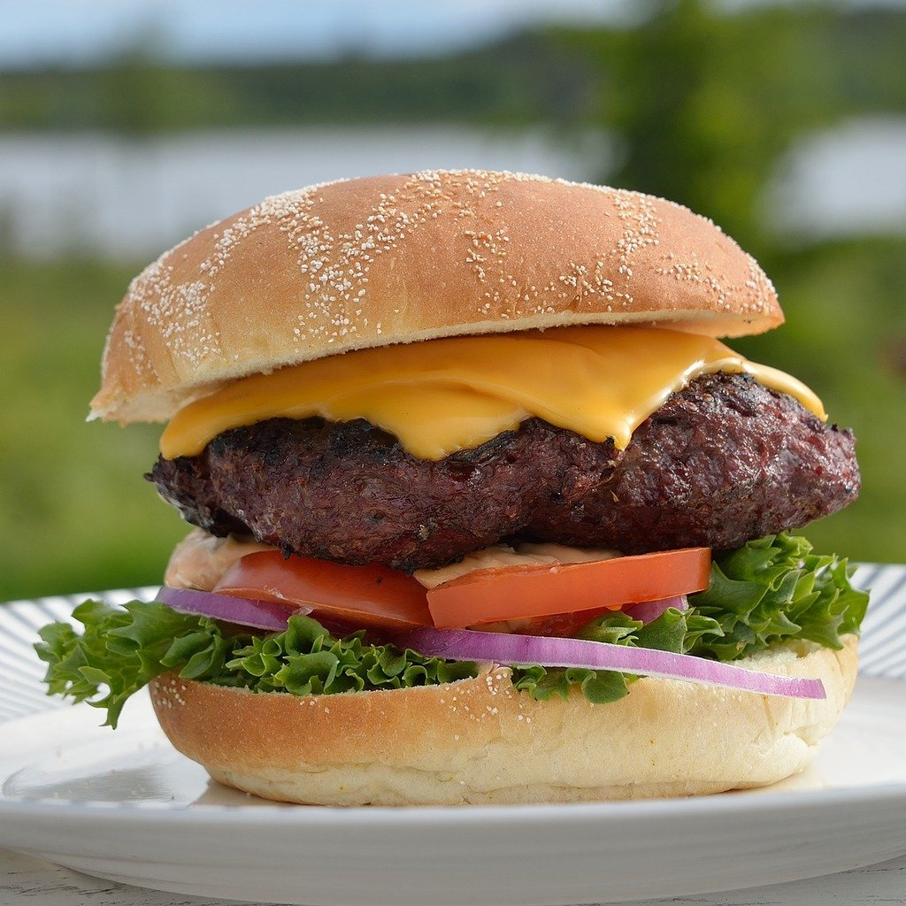

Juicy Hamburgers

As an American, I'm biased when I say that hamburgers are one of the greatest creations on this planet.
In this recipe, we are going to make some juicy (not dry) burgers to comfort our souls, and increase our blood pressure.
Let's grill some American hamburgers!
Preparation/Outcome
- Prep Time: 15 minutes
- Cook Time: 10 minutes
- Additional Time: 10 minutes
- Total Time35 minutes
- Servings: 8
- Yield: 8 servings
Ingredients
- Ground Beef
- Eggs
- Bread Crumbs
- Evaporated Milk
- Worcestershire Sauce
- Cayenne Pepper
- Garlic
Steps
- Construct Your Burger Balls: Mix the ground beef, egg, bread crumbs, evaporated milk, spices, and seasonings into a mixing bowl and shape with your hands.
- Season The Burgers: Season with Worcestershire sauce, cayenne pepper, and garlic
- Grill Burgers: Prepare your grill by applying cooking oil and heat at a medium-high heat.
Place the patties on the grill and cook each side at the same amount of time to cook thoroughly.
- Temperature & Time: Burgers should be at an internal temperature of 160 degrees Fahrenheit.
Grilling the patties for 4-5 minutes on both sides should be long enough.